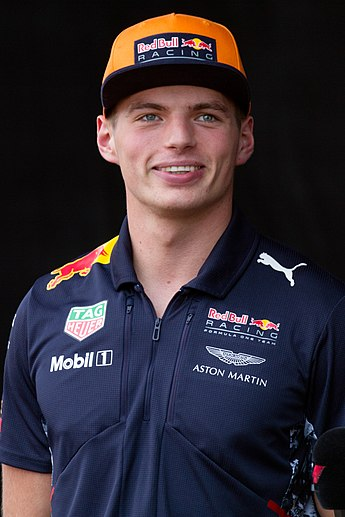
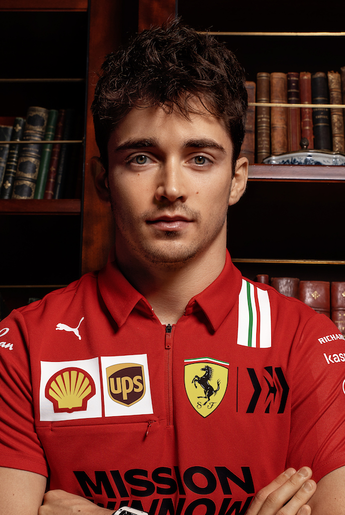

.jpg)
 Max verstappen
Max verstappen
 Red Bull Racing-RBPT
Red Bull Racing-RBPT
 Ferrari
Red Bull Racing-RBPT
Ferrari
Red Bull Racing-RBPT

O Campeonato Mundial de Fórmula 1 da FIA de 2022 foi a 73ª temporada do
Campeonato Mundial de Fórmula 1, que é reconhecido pela Federação Internacional de
Automobilismo (FIA), o órgão regulador do automobilismo internacional, como a mais
alta categoria de competição para carros de corrida monopostos. O campeonato foi
disputado em 22 etapas, tendo iniciado no Barém, em 20 de março, e terminado nos
Emirados Árabes Unidos, em 20 de novembro. Nesta temporada ocorreu a estreia do
Grande Prêmio de Miami, realizado no Autódromo Internacional de Miami. Equipes e
pilotos competiram para serem campeões mundiais de construtores e de pilotos,
respectivamente.
Na temporada de 2022 foi introduzido mudanças significativas nos regulamentos técnicos do
esporte. Originalmente, essas mudanças deveriam ser introduzidas em 2021, mas foram
adiadas para 2022 em resposta ao impacto da pandemia de COVID-19.
Em 9 de outubro de 2022, Max Verstappen venceu o Grande Prêmio do Japão em Suzuka,
sagrando-se bicampeão mundial de Fórmula 1.
| CAMPEÃO | VICE-CAMPEÃO | TERCEIRO LUGAR |  |  |
|
|---|---|---|
|
Max verstappen
|
Charles Leclerc | Sergio Pérez |
|
Red Bull Racing-RBPT
|
Ferrari
|
Red Bull Racing-RBPT
|
| Grande Prêmio | Pole Position |
|---|---|
| Grande Prêmio do Barém | Charles Leclerc |
| Grande Prêmio da Arábia Saudita | Sergio Pérez |
| Grande Prêmio da Austrália | Charles Leclerc |
| Grande Prêmio da Emília-Romanha | Max Verstappen |
| Grande Prêmio de Miami | Charles Leclerc |
| Grande Prêmio da Espanha | Charles Leclerc |
| Grande Prêmio de Mônaco | Charles Leclerc |
| Grande Prêmio do Azerbaijão | Charles Leclerc |
| Grande Prêmio do Canadá | Max Verstappen |
| Grande Prêmio da Grã-Bretanha | Carlos Sainz Jr. |
| Grande Prêmio da Áustria | Max Verstappen |
| Grande Prêmio da França | Charles Leclerc |
| Grande Prêmio da Hungria | George Russell |
| Grande Prêmio da Bélgica | Max Verstappen |
| Grande Prêmio dos Países Baixos | Max Verstappen |
| Grande Prêmio da Itália | Charles Leclerc |
| Grande Prêmio de Singapura | Charles Leclerc |
| Grande Prêmio do Japão | Max Verstappen |
| Grande Prêmio dos Estados Unidos | Carlos Sainz Jr. |
| Grande Prêmio da Cidade do México | Max Verstappen |
| Grande Prêmio de São Paulo | Kevin Magnussen |
| Grande Prêmio de Abu Dhabi | Max Verstappen |